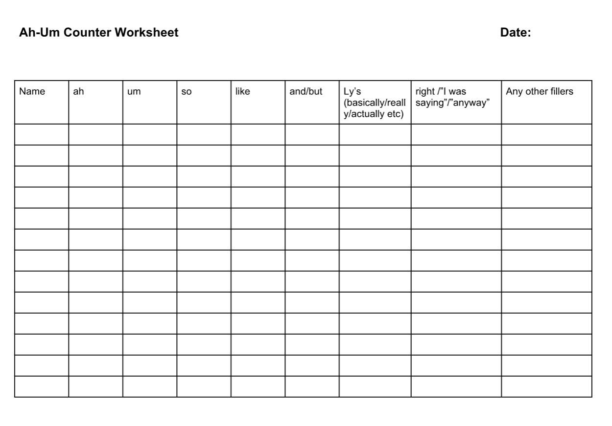

<!-- Main -->
	<div id="main" class="wrapper style1">
		<div class="container">
			<section>
				<p align="center"></p>
				<div class="10u -1u">
					<header class="major">
						<!-- <h2>Blog</h2> -->
						<!-- <span class="byline">Integer sit amet pede vel arcu aliquet pretium</span> -->
					</header>
					<h2>Summary of the Role</h2>
					<ul>
						<li>The Ah/Um Counter keeps track of all filler words that people use during the meeting. </li>
						<li>At the start of the meeting, explain your role to the group. </li>
						<li>During the meeting, write down the number of ahs, ums, likes, etc. that each person says in the meeting </li>
						<li>Give a report at the end of the meeting. </li>
</ul><br>
<h2>Evaluation form</h2>
Download: <a href="ahum.pdf"></a>
	
	<br>

<a href="https://www.toastmasters.org/Membership/Club-Meeting-Roles/Ah-Counter"><h2>Resource from Toastmasters International</h2></a>


				</div>
			</section>
		</div>
	</div>
